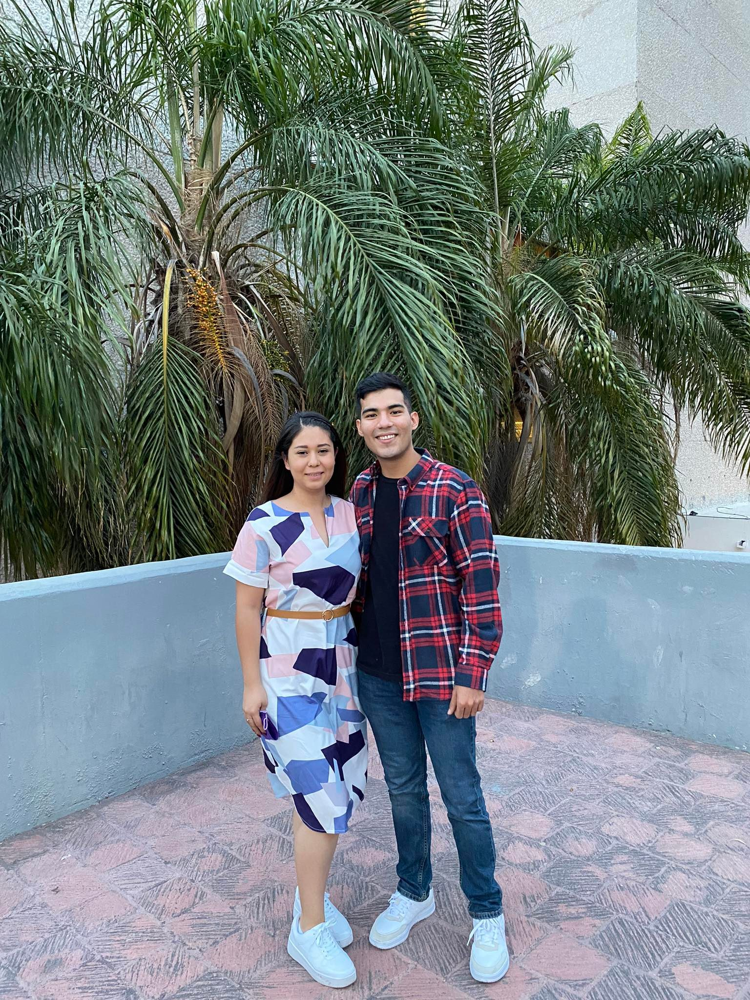

Nuestro primer viaje
Nuestro viaje a Monterrey fue el primero de muchos como nos dijimos días antes de ir. Sentía unos nervios inmensos ya que sería la primera vez que podria estar dias enteros contigo, disfrutarte, verte a mi lado en el asiento de copiloto con el paisaje de una carretera, sabía también que por fin tendríamos más interacción, que no solo sería salir a cenar o ir a tu casa a verte por unas horas. Pero estaba emocionado a más no poder, ya que el amor de mi vida estaría conmigo, lejos de mis problemas y ella de los suyos. Solo ella, su familia y yo decididos a pasar un buen rato, no podía pedirle nada más a la vida.
Comenzó un viernes por la mañana, temprano aun no salía el sol y yo ya estaba con mi maleta fuera de tu casa, saliste con una hermosa blusa negra con blanco, unos jeans negros y esos tenis blancos que compraste en mcallen. Estaba aún muy dormido para hacerte notar lo hermosa que te veías pero cuando te sonreí creo que lo notaste. Sin más, partimos, pronto la ciudad desapareció, solo era un camino y tu voz como mi música, hablamos de muchas cosas, cosas en la primera instancia no parecen importantes, pero el escucharte lo fue todo para mi. También disfruté de nuestros silencios, comprendí que no es hablar siempre, es solo disfrutar la compañía y presencia del otro. Lo que los primeros días de conocerte era un silencio de “que le dire par que no se aburra” era ahora un silencio de “estamos aquí y no importa lo demás”.
Pronto la primera parada, los tacos, fue una alegría inmensa que si les gustara y pronto me di cuenta que la pasaría bien, tu tía y tu familia incluyendome en todo, haciéndome sentir uno de ellos, comprendí que estaba en el lugar correcto. Partimos y seguí disfrutando de tu compañía ahora con música, y cuando menos nos dimos cuenta los cerros nos recibían y Monterrey estaba a la vista. Llegamos, y conocimos finalmente nuestra estancia.
Al llegar al parque y batallar para saber por dónde ir, entendí que la cosa no sería fácil pero haciendo equipo lo resolvimos pronto. Y finalmente estábamos ahí, tomados de la mano, decidiendo que hacer o que no, un hermoso día soleado nos veía hasta que se vino lo bueno: LAS BICICLETAS. Creo que mi egoísmo y competitividad me hizo decir “yo puedo, quiero ese viaje con ella”, y empezó la masacre. No podía, tú me veías con ternura y me hacías ver que si podía, pero hay cosas en la vida que nomas no. Creo que ahí viste como soy, me desespera no poder hacer ciertas cosas, pero me tuviste paciencia y me hiciste ver que todo estaba bien. Que no siempre se debe poder hacer todo, tomaste esa bicicleta doble y me hiciste vivir lo que es andar en bicicleta, sentí tan hermoso.
Debiste ver ese paisaje, el parque en toda su inmensidad, el sol brillante en tu hermoso pelo, los cerros y tu familia rodeandonos. Fui el hombre mas feliz del mundo en ese momento, entendí que no todo me debe salir para que las cosas salgan bien, que somos complemento y que siempre estarás ahí para enseñarme a vivir lo que no he vivido.
Pronto llegó la noche, volvimos pero ahora a la macroplaza, compramos cositas. Pero yo solo tenía ojos para ese hermoso vestido morado con blanco, tan hermosa que te veías. Amo cada detalle de esa noche, como el simple hecho de que tu cubrebocas combinara.
Caminamos, viajamos en el bote, pero sobre todo disfrutamos el paisaje abrazados platicando de un futuro que deseamos tener, nos hicimos ver que juntos no tendremos límites. Pero lo que se robó la noche fue tu mártir de volver al carro jajaja, no podías ni caminar sin que te doliera el alma. Pero finalmente llegamos a casa, nos despedimos y al estar en cama, me dije que no había mucho chiste, solo era vivir y disfrutar de tu hermosa compañía, no había nada de “haber si nos aguantamos”. Solo era estar juntos y disfrutar.
El segundo día comenzó, pero no sin antes ir al parque y disfrutar del hermoso clima, aunque lo niegues mucho, luces hermosa al empezar el día, tu carita al natural y más cuando me sonríes y me abrazas. Es algo que nunca olvidaré.
Pero el tiempo no se detenía, Santiago nos esperaba estaba ansioso de por fin conocerlo y más a tu lado. Pronto llegamos y nos topamos con un hermoso lugar, tranquilo en el cual disfruté mucho.
Entonces decidimos ir a la cola de caballo, un lugar que aunque nunca te lo dije esperaba conocer contigo. Era el lugar favorito de mi papá y aunque si te lo dije, es además el lugar donde mi papá me dijo algo que nunca olvidaré. Un día cuando tenía 8 años, mientras jugaba a la orilla del río en el lugar donde te dije que le gustaba hacer carne asada, se acercó a mí para regañarme de no jugar tan cerca del agua y cuando le reclamé que porque siempre me protegía tanto, que me dejara ser más “libre”, me contestó que cuando fuera grande lo entendería, pero que él siempre me iba a proteger y querer más que a nada en su vida. Cuando le pregunté por qué, me contestó: “por que te pareces demasiado a tu mama.” Al ir montando a caballo tras de ti, volte a ver ese lugar y aunque me dio tristeza, al verte ahora junto a mi en ese lugar me di cuenta que la vida avanza y que siempre habrá cosas mejores enfrente, ahora era un adulto y te tenia a mi lado.
Por fin llegamos a la cascada, era inmensa como siempre. Y sin más, nos tomamos fotos, lo cual me encanta porque puedo ser tu fotógrafo personal, siempre saliendo hermosa en todas las fotos. Disfruté demasiado estar junto a ti en ese lugar tan especial para mi, sobre todo la foto donde salimos de espaldas juntos, al verla fue simplemente perfecto.
Al tomarnos las fotos con los guacamayos, note lo feliz que eras. Luciste simplemente espectacular con ella, terco si, pero se nos presto para la foto. Y nos regalo tal vez mi foto favorita de ese dia, no se, tantas que salieron bien. Pero tu sonrisa fue la que se robo el show.
Estaba muy feliz de por fin estar viviendo toda clase de experiencias junto a ti y aunque no quería irme sabía que otro destino nos esperaba. De vuelta en casa, empecé a preparme era hora de mi mejor outfit pero no estaba listo para lo que venia a continuacion, sentado en la sala sabia que te pondrias el vestido que compramos, me hize tonto y no lo resisti, asi que decidi subir a tu cuarto y DIOS MIO, lucias preciosa. Eras lo mas hermoso que había visto en mi vida, no podía decir nada por fuera pero decía un millón de cosas por dentro. Si, estoy enamorado de ti, pero esto ya estaba por encima de eso, era otro nivel.
Fue entonces que fuimos de nuevo a fundidora, pero a quién le importaba un parque de 5 hectáreas, yo iba viendote, eras el único paisaje que quería ver. En fundidora, paso otra cosa que sabes bien. Hablamos de mi problema con el vape, pero ahora fue diferente a semanas atrás cuando teníamos algo negativo que atender, me escuchaste, me hiciste ver que aunque no estaba bien y que no estabas de acuerdo, tu seriedad no era por enojo, era por preocupación y porque siempre quieres que esté bien. Agradezco tanto esos detalles, esa madurez de tu parte. Es algo que siempre hiciste pero que nunca aprecie lo suficiente, me enfocaba más en el hecho de haberte “fallado” que en el hecho de mejorar y seguir, pero ahora era todo diferente en minutos quedó todo y seguimos disfrutando de la noche. Fue entonces que volvimos a casa, y de repente, cambio de planes. Fuimos a cenar, si es que se le puede decir asi (tragar), lo cual me encanto, otro momento que jamás olvidaré, me invitaste mi malteada y solo dejamos que el tiempo corriera. Fue así como sin más, el segundo día había terminado.
En el tercer día, las cosas fueron un poco diferentes. Un día más transitorio, pero no por eso menos especial. Por fin conocerias San Pedro, una ciudad a la que mi hermano y yo le tenemos mucho cariño al ser donde más nos llevamos. Fue hermoso verte ver ropa, comprar comida para Puppy y sobre todo compartir una nieve que de nuevo me invitaste.
Solo caminar de nuevo, no prestarle importancia a los detalles insignificantes a los que antes les daba muchas vueltas como: que le dire, la haré reír, querrá esto, lo otro. No, solo disfrutar algo que sé que querías desde hace tiempo y que no podía concebir. Todo tan tranquilo, tan liberador, tan fluido. Pero a la vez estaba triste, porque sabía que era cuestión de horas para que todo terminara. Y entonces llegó, era hora de irnos. Triste, pero satisfecho. La carretera volvió a hacer acto de presencia. El viaje ahora fue diferente, y los disfruté por una razón en especial, tu tía. Supe desde el principio que estar ahora en tu vida no era solo para ti, era estar para todas las personas que amas. Cuando la escuche, note como esa persona alegre y tenaz, es en realidad una persona muy sabia y carismática. Algo que ya sabía, pero no tenía el tiempo para apreciarlo. Su compañía me hizo ver el hermoso entorno en el que estás y creciste.
Y finalmente, Reynosa de nuevo. Al dejarte en casa, estaba triste y cansado, igual tu se notaba en tu carita. Era momento de decirle adiós a tan hermosa experiencia. Aprendí demasiado junto a ti, pero sobre todo disfruté, disfruté mucho, disfruté como no te das una idea. De nuevo recalco que no tengo nada que soportarte, al contrario tengo mucho que disfrutarte. Era el primer viaje de muchos, pero te digo algo, es el que del cual nunca olvidaré ningún solo detalle, fue el primer viaje con el amor de mi vida y con la persona que de ser posible siempre viajaré.
Diana mi amor, te amo con toda mi vida y así será siempre. Espero de todo corazón que esta experiencia haya sido tan buena para ti como para mi, que hayas disfrutado de mi compañía, que la persona que viste es a la que amas y con la que también quieras seguir viajando. Te prometo de todo corazón, que esta página se seguirá llenando, tanto que se va a romper, pero no importa hago otra.
Te adora, tu novio.